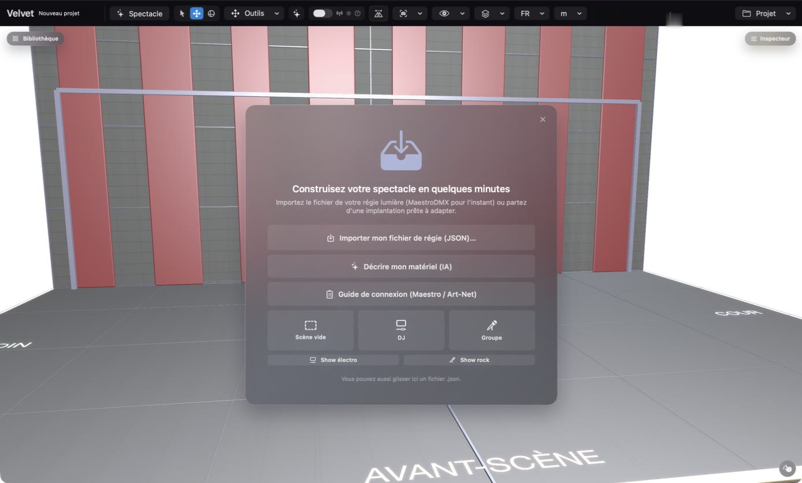
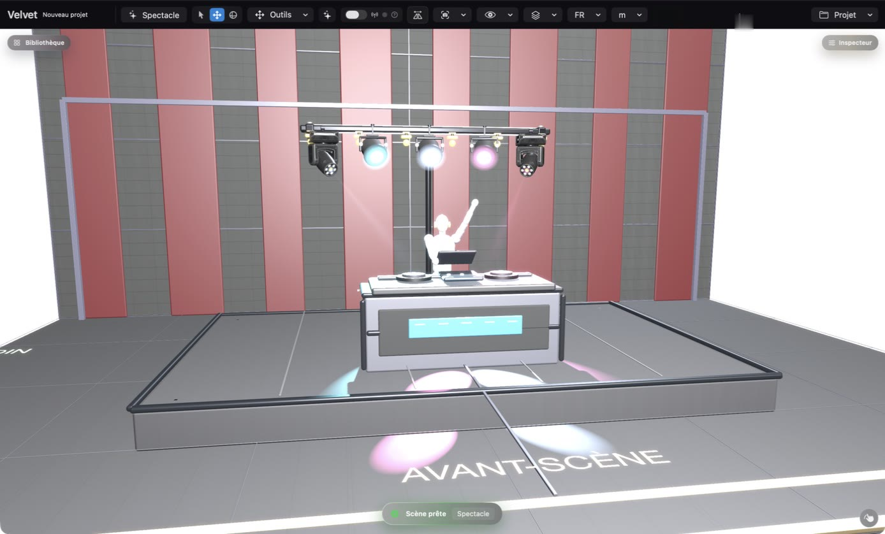
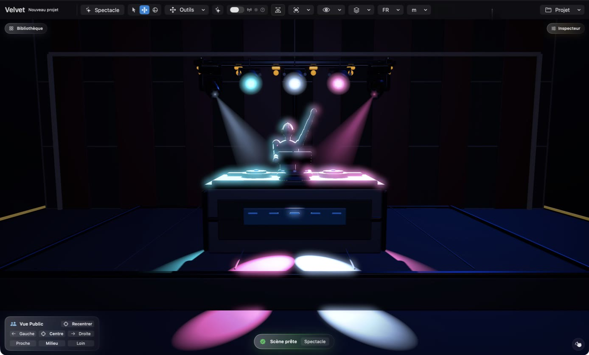
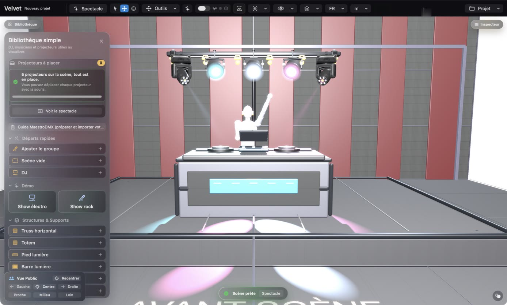
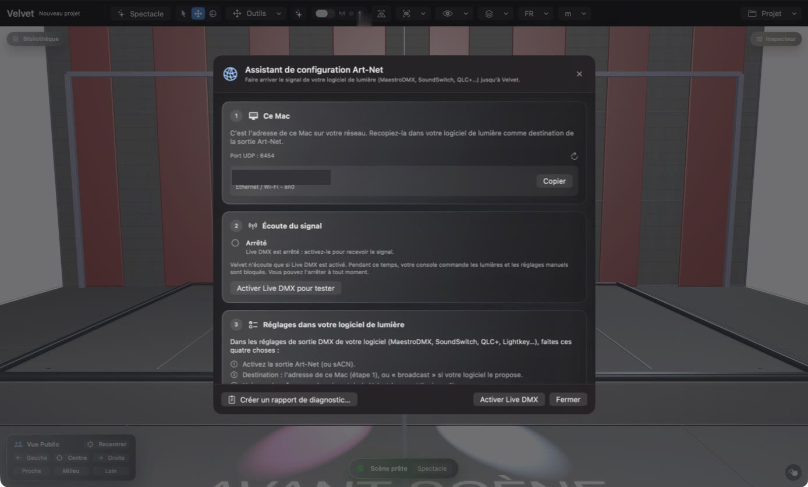

Velvet Visualizer, pas à pas : vos 5 premières minutes
Aucune connaissance de console lumière n'est nécessaire. À la fin de cette page, vous aurez une scène à l'écran, vos lumières qui jouent en 3D, et vous saurez brancher votre propre logiciel de lumière.
Double-cliquez sur le .zip pour le décompresser, puis glissez Velvet Visualizer dans votre dossier Applications.
Ouvrez-le. Vous avez 30 jours pour tout essayer, sans compte et sans carte bancaire.
1Choisir un point de départ
La première fois que vous ouvrez l'app, une carte d'accueil vous demande comment commencer. Le choix le plus simple est DJ : une scène toute prête avec un pupitre DJ et quelques lumières.

La carte d'accueil. Cliquez sur DJ pour commencer, ou sur Show électro / Show rock pour voir une démonstration.
Vous utilisez MaestroDMX ? Choisissez plutôt Importer mon fichier de régie (JSON) : vos projecteurs sont placés pour vous.
2Regarder votre scène
Votre scène apparaît avec ses lumières. Cliquez sur une lumière et glissez-la pour la déplacer. Le bandeau du bas indique Scène prête quand tout est en place.

Le point de départ DJ : un pupitre, un truss et cinq lumières.
3Allumer les lumières : le mode Spectacle
Cliquez sur Spectacle en haut à gauche. La salle s'éteint pour que vous voyiez les faisceaux, comme à un vrai concert. Un petit panneau Vue Public permet de regarder depuis la gauche, le centre ou la droite. Cliquez de nouveau sur Spectacle pour revenir.

Le mode Spectacle : ce que verrait votre public.
4Ajouter vos propres lumières
Cliquez sur Bibliothèque (en haut à gauche). Tapez le nom de votre projecteur dans la recherche, sous Projecteurs réels. Introuvable ? Cliquez sur Chercher en ligne : des milliers de modèles sont disponibles. Toujours rien ? Créer… vous laisse le décrire vous-même.

La Bibliothèque : départs rapides, démos, structures et vos projecteurs.
5Brancher votre logiciel de lumière
C'est l'étape qui fait réagir la scène à votre show. Cliquez sur le petit ? à côté de l'interrupteur Live DMX : l'assistant de configuration Art-Net s'ouvre.

L'assistant de configuration. L'étape 1 montre l'adresse de ce Mac sur votre réseau (masquée ici).
Copiez l'adresse affichée à l'étape 1.
Dans votre logiciel de lumière (MaestroDMX, SoundSwitch, QLC+…), activez la sortie Art-Net et collez cette adresse comme destination.
De retour dans Velvet Visualizer, cliquez sur Activer Live DMX pour tester. Allumez une lumière dans votre logiciel : chaque étape de l'assistant passe au vert quand le signal arrive.
Un autre logiciel utilise déjà le port Art-Net (SoundSwitch, par exemple) ? Velvet Visualizer passe tout seul en mode local et affiche un voyant bleu LOCAL. Il reçoit alors ce qui est envoyé depuis ce même Mac.
Enregistrer et partager
Utilisez le menu Projet (en haut à droite) pour enregistrer votre scène ou exporter un plan PDF pour votre technicien ou votre client.
Un blocage ?
Tout est expliqué dans le guide complet. Vous pouvez aussi m'écrire directement : je suis développeur seul et je lis tout.